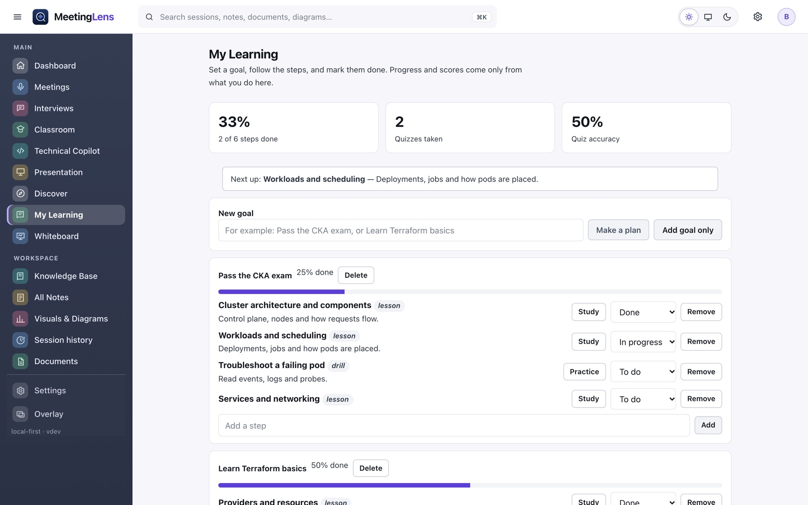

Real activity only
A step is done when you say so. Quiz scores are the answers you gave.
Discover & learning
Real articles and open-source projects from official sources, ranked on your computer for the interests you pick. Then turn them into goals and steps.
The installer you can download today is 0.1.4. The new workspace on these pages (Dashboard, Technical Copilot, Whiteboard, Discover, My Learning and more) is built and in the source code, and arrives in the next installer, 0.1.5. Each feature below says which one it belongs to.
Discover
New in 0.1.5Choose from twelve topics or add any skill of your own, such as Rust, Terraform or Prompt engineering. Discover matches articles and GitHub projects for it.

Sources
Discover is off until you turn it on, and it lists where it will look. Every item links to its source with the date the source gave. Trends are counts of what was fetched, not a guess.
| Source | What it provides |
|---|---|
| Kubernetes Blog · CNCF | Project news and announcements |
| AWS News Blog · Azure Blog | Cloud service announcements |
| HashiCorp Blog · Docker Blog | Infrastructure and container tooling |
| GitHub Blog · Cloudflare Blog | Engineering and platform posts |
| GitHub search | Well-starred, recently updated projects for your interests |
| Official certification and learning pages | Links to AWS, Microsoft, CNCF and HashiCorp pages. No dates or claims copied. |
My Learning
New in 0.1.5Set a goal and let Kinviva suggest the steps, or write your own. Mark steps in progress or done. Progress is just the share you finished.

A step is done when you say so. Quiz scores are the answers you gave.
Add a step from an article, a lecture or an interview drill.
A short list of your own tasks on the Dashboard.
Download Kinviva for Mac or Windows. No account, no subscription.
Download Kinviva